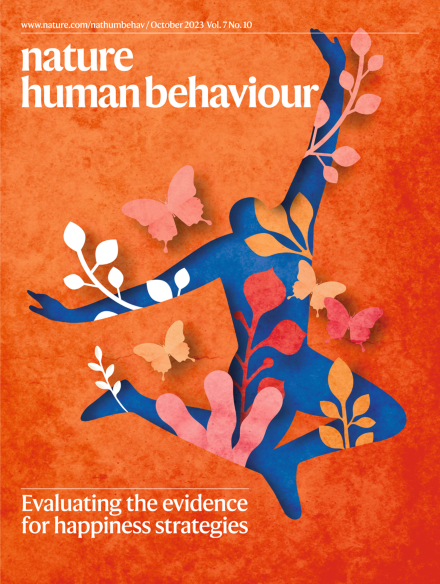

-
2026
How does turning to AI for companionship predict loneliness and vice versa?
↗Folk, D. & Dunn, E.
Psychological Science
-
2026
What does a good day look like?: An interpretable machine learning approach to the American Time Use Survey
↗Folk, D., Henninger, M., & Dunn, E.
PNAS Nexus
-
2026
Everything is better together: Analyzing the relationship between socializing and happiness in the American Time Use Survey
↗Folk, D. & Dunn, E.
Social Psychological and Personality Science
-
2026
Harnessing artificial intelligence to facilitate difficult conversations
↗Maheshka, C., Folk, D., & Dunn, E.
Social Psychological and Personality Science
-
2026
Is a random human peer better than a highly supportive chatbot in reducing loneliness over time?
↗Li, R.-N., Folk, D., Singh, A., Ungar, L., & Dunn, E.
Journal of Experimental Social Psychology
-
2025
Cultural variation in attitudes towards social chatbots
↗Folk, D., Wu, C., & Heine, S.
Journal of Cross-Cultural Psychology
-
2025
Individual differences in anthropomorphism explain social connection to AI companions
↗Folk, D., Heine, S., & Dunn, E.
Scientific Reports
-
2025
The varieties of nonreligious experience: meaning in life among believers, non-believers, and the spiritual but not religious
↗Jettinghoff, W., Folk, D., Radjaee, P., Willard, A., Norenzayan, A., & Heine, S. J.
Religion, Brain & Behavior
-
2025
How sources of purpose predict meaning in life, happiness, and psychological richness across cultures
↗Mask, M., Folk, D., & Heine, S.
Journal of Positive Psychology
-
2024
Reply to: Strength of evidence for five happiness strategies
↗Folk, D., Dunn, E.
Nature Human Behaviour
-
2024
Can chatbots ever provide more social connection than humans?
↗Folk, D., Yu, S.J., & Dunn, E.
Collabra: Psychology
-
2024
Examining the performance of the chi-square difference test when the unrestricted model is slightly misspecified
↗Folk, D. & Savalei, V.
Behavior Research Methods
-
2024
Dare to know! The existential costs of a faith in science
↗Folk, D., Rutjens, B. T., Van Elk, M., & Heine, S.
The Journal of Positive Psychology
-
2024
How can people become happier? A systematic review of preregistered experiments
↗Folk, D. & Dunn, E.
Annual Review of Psychology
-
2023
A systematic review of the strength of evidence for the most commonly recommended happiness strategies in mainstream media
↗Folk, D. & Dunn, E.
Nature Human Behaviour
Featured on the October 2023 cover of Nature Human Behaviour

-
2021
Changes in social connection during COVID-19 social distancing: It's not (household) size that matters, it's who you're with
↗Okabe-Miyamoto, K., Folk, D., Lyubomirsky, S., & Dunn, E.
PloS One
-
2021
Dimensionality, item response theory, effect size attenuation, and test bias analyses of the self-importance of moral identity scale (SIMIS)
↗Lutz, P. K., O'Connor, B. P., & Folk, D.
Journal of Personality Assessment
-
2020
Did social connection decline during the first wave of COVID-19?: The role of extraversion
↗Folk, D., Okabe-Miyamoto, K., Dunn, E., & Lyubomirsky, S.
Collabra: Psychology